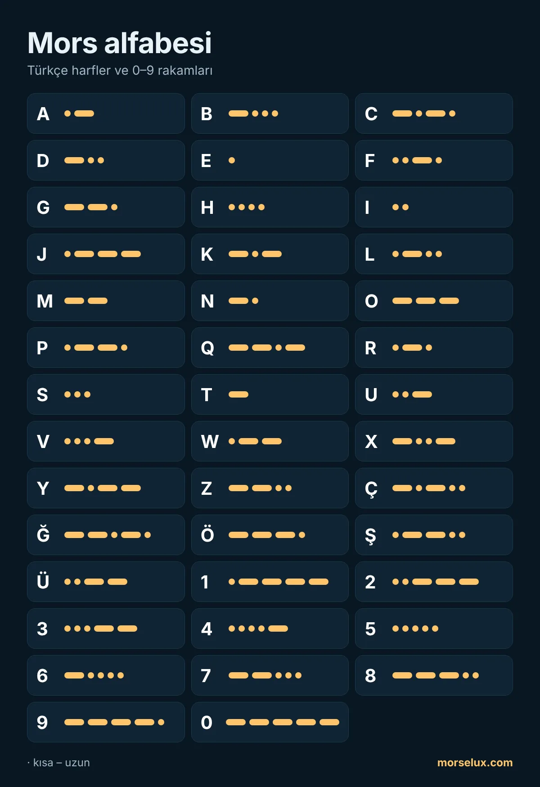

- Dinleyin, saymayın. Gerçek hızda nokta ve çizgiler sayılamaz; her harf bir ses kalıbıdır.
- Zıtlar yardımcı olur: A (·–) ile N (–·), D (–··) ile U (··–), G (––·) ile W (·––) birbirinin aynadaki görüntüsüdür.
- Kısa seanslarla çalışın. Günde on-on beş dakika, haftada bir uzun seanstan daha verimlidir.
- Kullanın. Mors alfabesi çeviriciye bir kelime yazın ve harfleri okumadan önce duymaya çalışın.
MorseLux › Alfabe
·–·· ··– –··– Tablo · dinlemek için dokunun
Mors alfabesi
Uluslararası Mors kodunun bütün harfleri, rakamları ve noktalama işaretleri. Nasıl duyulduğunu öğrenmek için bir işarete dokunun – Mors gerçekten böyle öğrenilir.
A–Z harfleri
Mors alfabesinde rakamlar (0–9)
Rakamlar her zaman beş sinyalden oluşur, bu da öğrenmeyi kolaylaştırır: 1'den 5'e kadar noktayla, 6'dan 0'a kadar çizgiyle başlarlar.

Noktalama işaretleri
| İşaret | Morse | Dinle |
|---|---|---|
| . | ·–·–·– | |
| , | ––··–– | |
| ? | ··––·· | |
| ' | ·––––· | |
| ! | –·–·–– | |
| / | –··–· | |
| ( | –·––· | |
| ) | –·––·– | |
| & | ·–··· | |
| : | –––··· | |
| ; | –·–·–· | |
| = | –···– | |
| + | ·–·–· | |
| - | –····– | |
| _ | ··––·– | |
| " | ·–··–· | |
| $ | ···–··– | |
| @ | ·––·–· |
Türkçe ve özel harfler (Ç, Ğ, Ö, Ş, Ü…)
Bu harfler bazı dillerde kullanılan genişletilmiş Mors kodunun parçasıdır. Türkçedeki Ç, Ğ, Ö, Ş ve Ü harflerinin kendi işaretleri vardır; I ve İ ise aynı işaretle (··) gönderilir.
| İşaret | Morse | Dinle |
|---|---|---|
| Ä | ·–·– | |
| Ö | –––· | |
| Ü | ··–– | |
| ß | ···––·· | |
| Ñ | ––·–– | |
| É | ··–·· | |
| À | ·––·– | |
| È | ·–··– | |
| Ç | –·–·· | |
| Ğ | ––·–· | |
| Ş | ·––·· |
Alfabeyi öğrenmek için ipuçları
Sık sorulan sorular
Mors alfabesinde kaç işaret var?
Uluslararası Mors kodunda A–Z arasındaki 26 harf, 0–9 arasındaki on rakam ve en yaygın noktalama işaretleri bulunur. Bazı diller Ç veya Ö gibi kendi harflerini ekler.
Türkçe harfler Mors ile nasıl yazılır?
Ç (–·–··), Ğ (––·–·), Ö (–––·), Ş (·––··) ve Ü (··––) için ayrı işaretler vardır. I ve İ aynı işaretle (··) gönderilir.
Mors alfabesini yazdırabilir miyim?
Evet. Sayfanın üstündeki «PDF indir» düğmesini kullanın: açık renkli bir A4 sayfasıdır, sınıf veya izci grubu için uygundur.
En kısa ve en uzun harf hangisi?
En kısalar E (·) ve T (–). Harfler arasında en uzunlar dört sinyallidir, örneğin Q (––·–) ve Y (–·––); rakamlar ise her zaman beş sinyallidir.